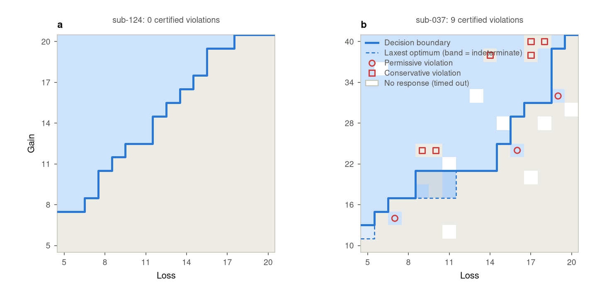
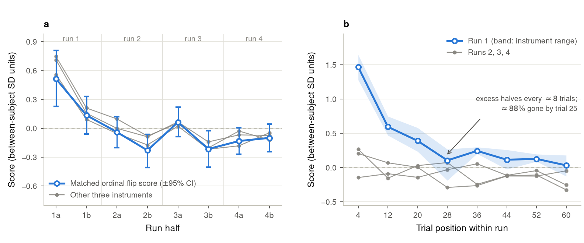
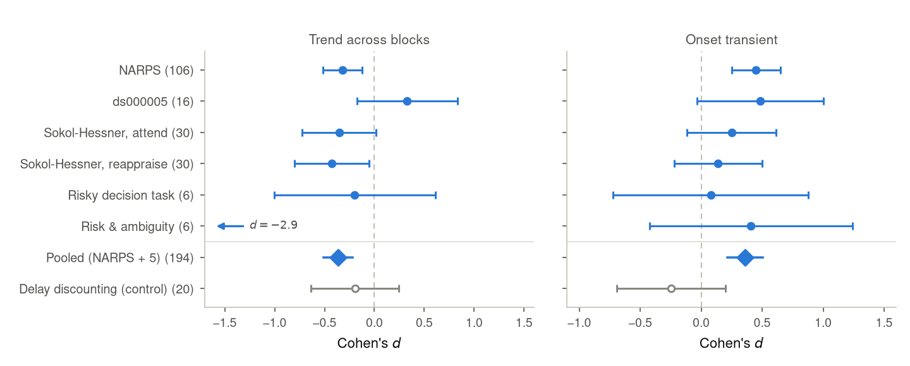
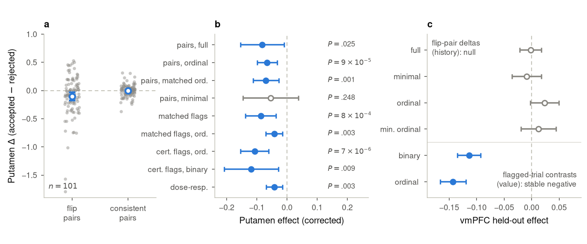

The result depends on the model and on which gambles appear when.
Our tool
Assume only dominance: more gain or less loss is never worse
Read inconsistency directly from the choices, trial by trial.
B · Method · decision boundary and flips
A flip: rejecting a gamble that dominates one you accepted
Try it: click cells
0flip pairs
0matched pairs ν = fewest reversals to make it consistent
acceptrejectviolationboundary

B · Method · a behavioral dataset to generalize to
Linked Colored Lottery Task: one dimension instead of two
Wyngaarden, Yang, Dennison & Smith (2025), Data in Brief 61:111844 · Exp 1 in person n = 46 ($13 lottery vs $7 sure) · Exp 2 online n = 287 ($7 vs $3)
Higher win probability always dominates, so accept at 30% but reject at 60% is a flip. The method transfers unchanged.
B · Results · NARPS behavior
The drift is a one-time opening transient

Concentrated in the first ~25 trials of run 1
Mostly permissive: accepting gambles one’s own boundary rejects
Runs 2–4: no trend
B · Results · replication
The same signature across datasets

6lab risky-choice datasets, pooled
47,000smartphone participants also show it
nullin the delay-discounting control
B · Results · a first look at the lottery data (run and audited today)
The lottery task shows the same one-time opening
first color block (± s.e.)blocks 2–3opening excess
1 · Opening
The first 10 choices contradict the person’s own boundary more often than the next 10.
First block, first 10 vs next 10: in person 14% → 5% (P = .0002), online 9% → 6% (P = .0006).
2 · One time only
Later blocks stay flat. A new color does not reliably restart it.
3 · Survives the audit
Same result with gamble content held fixed, a held-out boundary, and a static-chooser replay.
Caveats: online the effect is small and not specifically permissive. About 1 in 6 people miss the very first trial, so part of the opening may be getting used to the task. Matched flip score not run yet.
B · Results · neural
Dorsal putamen tracks flips, while vmPFC tracks value

a · One dot per person: putamen response at the accepted minus the rejected gamble of a pair. Flip pairs fall below zero; consistent pairs sit on zero.
b · The same effect measured nine ways. Left of the dashed line = effect present. Filled dot = significant.
c · vmPFC: no flip effect (grey, on zero), but a clear value effect (blue).
−0.082putamen, flip vs value-matched pairs, time and motor corrected (P = .025, n = 101)
Open question
Do people adjust their choices as they become certain about the gamble environment?
C · New Smith-lab replication · why
Three things Tom (2007) and NARPS held fixed
Stake magnitudeTom kept stakes small and set α = 1 (linear value, no diminishing sensitivity), so only λ was fit. Stakes up to $100 let α matter.
Tom et al. 2007 · Holt & Laury 2002 · Brochard & Daunizeau 2024
Reliability and trial countReward BOLD test-retest reliability is low and rises with trials.
Elliott et al. 2020 · Mattoni et al. 2026 (our lab)
Compensation contextA large guaranteed payment may dull the salience of task money.
Show-up-fee framing studies; little direct fMRI evidence
Stakes:
Same 16 × 16 geometry. Only the dollar scale changes.
C · New Smith-lab replication · design (IRB v1.0)
50 people · 2 visits · 6 runs of 64 gambles each
Randomized 1:1:
3 stake levels → H1
Bigger stakes → a larger ventral-striatum gain response, possibly levelling off at high stakes.
2 visits × 128 trials per level → H2
More trials → better reliability and precision, with diminishing returns.
Visit 2 repeats the same gambles in a new order, so test-retest compares identical items.
2 pay contexts → H3 (secondary)
A known fixed payment → weaker, less reliable sensitivity to task stakes.
D · My expanded research · from NARPS to new tests
What NARPS raised, and how the new study can test it
D · My expanded research · proposed additions
Two additions to the task
1 · Range preview + check
Before first exposure to selected stake environments: show the ranges, then quiz the limits.
The other environments get matched standard prep. Counterbalanced; compared at first exposure in Visit 1.
2 · End-of-task review
After the whole task, show earlier gambles with the original answers: keep or change?
No outcomes are shown during the task, so any change reflects regret, not feedback.
D · My expanded research · predictions
If the opening is environment learning…
Range preview shortens the opening
Prediction: a smaller early-vs-late putamen difference with preview.
People revise their opening choices
Changes should move opening choices toward the person’s final boundary, including early choices that were not flips.